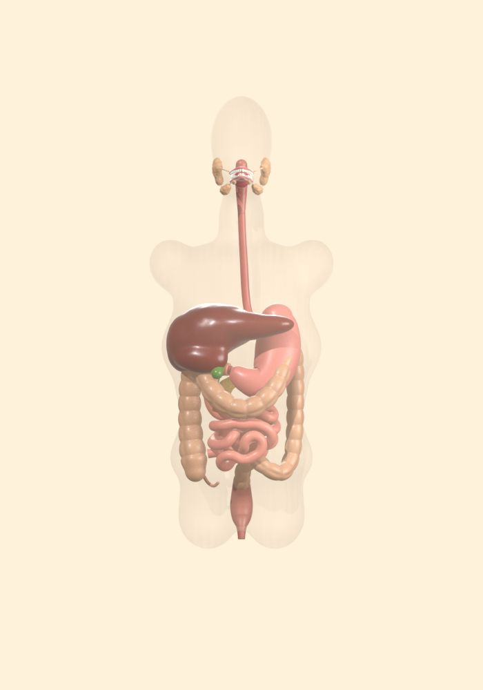

Biologi · fordøjelse
Fordøjelsessystemet i 3D
Drej modellen, og klik på et organ for at se, hvad det gør. Under Madens vej følger du en mundfuld mad fra munden til blodet — og ud i den anden ende.
Henter 3D-modellen …

Set forfra er personens højre side til venstre i billedet Træk for at dreje · rul eller knib for at zoomeOm modellen og forenklingerne
Modellen er bygget i Blender som en anatomimodel. Organernes form og indbyrdes placering er tegnet efter anatomien hos en voksen, men forenklet:
- Tyndtarmen er ca. 2 m lang i modellen; i virkeligheden er den 5–6 m. Tarmkrøset, blodkarrene, bughinden og milten er udeladt.
- Tiderne er typiske værdier og varierer meget med måltidet og personen. Maden i mavesækken går videre lidt ad gangen, ikke som én klump.
- pH-værdierne er idealiserede: munden ≈ 7, mavesækken ≈ 1,5–2, tyndtarmen ≈ 7–8 (galde og bikarbonat), tyktarmen ≈ 6–7.
- Molekylerne er symboler: en rigtig stivelseskæde har tusindvis af glukoseenheder, og fedtet spaltes i virkeligheden mest til fedtsyrer og monoglycerid.
Mere om enzymer: Enzymhastighed, Enzymkinetik og øvelsen Spytamylase — nedbrydning af stivelse.